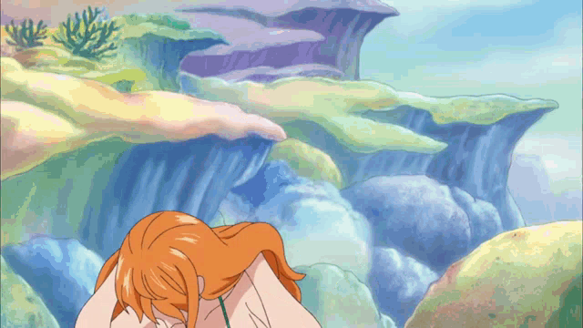

Aqui vou contar um pouco sobre cada personagem principal do bando do chapéu de palha
Luffy é o capitão dos Piratas do Chapéu de Palha e o protagonista da série. Ele comeu a Gomu Gomu no Mi, que lhe deu a habilidade de esticar seu corpo como borracha. Ele está em busca do tesouro One Piece e sonha em se tornar o Rei dos Piratas. Sua recompensa é de 3.000.000.000 Bilhões de Berries

Zoro é o espadachim dos Piratas do Chapéu de Palha. Ele é um espadachim habilidoso que usa três espadas em combate. Sua recompensa é de 1.111.000.000 Bilhões de Berries

Nami é a navegadora dos Piratas do Chapéu de Palha. Ela é uma ladra habilidosa e usa um bastão chamado Clima-Tact para controlar o clima. Sua recompensa é de 366.000.000 Milhões de Berries

Usopp é o atirador dos Piratas do Chapéu de Palha. Ele é um mentiroso patológico e usa uma variedade de armas em combate. Sua recompensa é de 500.000.000 Milhões de Berries
Sanji é o cozinheiro dos Piratas do Chapéu de Palha. Ele é um lutador habilidoso que usa técnicas de artes marciais em combate. Sua recompensa é de 1.032.000.000 Bilhões de Berries

Chopper é o médico dos Piratas do Chapéu de Palha. Ele comeu a Hito Hito no Mi, que lhe permitiu se transformar em uma rena e ganhar habilidades médicas. Sua recompensa é de 1.000 Mil Berries
Robin é a arqueóloga dos Piratas do Chapéu de Palha. Ela comeu a Hana Hana no Mi, que lhe permite criar cópias de si mesma em qualquer superfície. Sua recompensa é de 930.000.000 Milhões de Berries
Franky é o carpinteiro dos Piratas do Chapéu de Palha. Ele é um ciborgue que pode se transformar em uma variedade de veículos. Sua recompensa é de 394.000.000 Milhões de Berries
Brook é um espadachim habilidoso e um músico talentoso dos Chapéu de Palha. Ele comeu a Yomi Yomi no Mi, que lhe permitiu voltar à vida como um esqueleto, possui uma velocidade extraordinária devido ao seu corpo leve e é difícil de ser ferido por causa de seu estado de morto-vivo. Sua recompensa é de 383.000.000 Milhões de Berries

Jinbe é o timoneiro dos Piratas do Chapéu de Palha e um dos oficiais sêniores da Grande Frota dos Chapéus de Palha. Ele é um lutador habilidoso que usa técnicas de artes marciais em combate. Sua recompensa é de 1.100.000.000 Bilhões de Berries